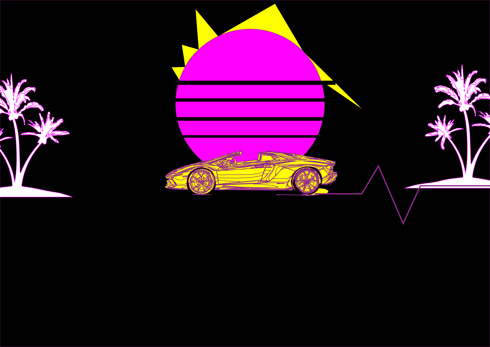
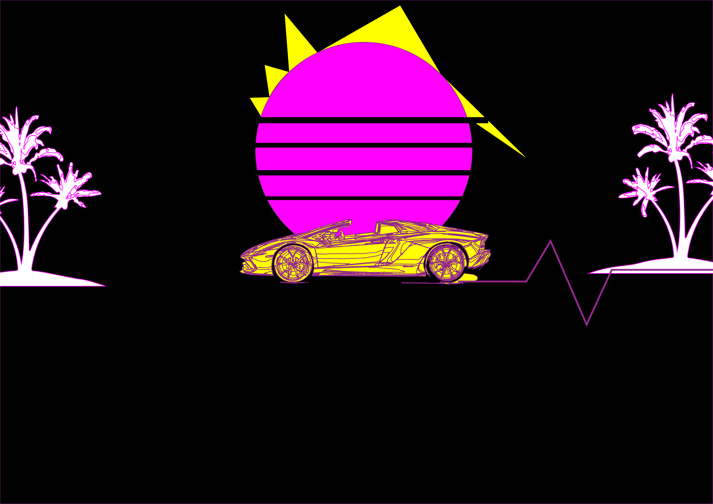

MuW201 Tangible Computing
Clock
Music Visualizers
Music visualizers were invented in 1976 by Robert Brown, the man behind the Pong game, who worked at Atari, for the Atari Video Music. It received a mild to positive coverage in Video Magazine. The drawback being that it would become monotonous once the novelty wears off.
Music Visualizers only became available in home computers in 1985 when Infinite Softwares released 'sound to light'generator. Multiple versions came to the marketplace in the late 90s and their use became wide-stream once Microsoft implemented them in Windows 97.
The main player in this field is Adobe, which, through the After Effects product of the adobe suite, has given even amateurs the ability to create visuals to accompany a song.
Frequency-based Music Visualizers chops the audio file into small subsets, usually less than 20 milliseconds, extracts the frequency component, then updates the display according to its value.
This approach, however, doesn't account for the spikes in the music and fails to recognize the beat and percussion.
These would be the features in my own Music Visualization Tool-
A landscape with the side view of a lamborghini which is leaving neon trails which will move in a wavelength type formation in accordance with the treble.
A neon sun which brightens, changes shapes, emits rays, in accordance with the beat.
A few palm trees on either end which will also move in accordance with the notes of the music.

Music Visualizers
Music visualizers were invented in 1976 by Robert Brown, the man behind the Pong game, who worked at Atari, for the Atari Video Music. It received a mild to positive coverage in Video Magazine. The drawback being that it would become monotonous once the novelty wears off. Music Visualizers only became available in home computers in 1985 when Infinite Softwares released 'sound to light'generator. Multiple versions came to the marketplace in the late 90s and their use became wide-stream once Microsoft implemented them in Windows 97. The main player in this field is Adobe, which, through the After Effects product of the adobe suite, has given even amateurs the ability to create visuals to accompany a song. Frequency-based Music Visualizers chops the audio file into small subsets, usually less than 20 milliseconds, extracts the frequency component, then updates the display according to its value. This approach, however, doesn't account for the spikes in the music and fails to recognize the beat and percussion. These would be the features in my own Music Visualization Tool- A landscape with the side view of a lamborghini which is leaving neon trails which will move in a wavelength type formation in accordance with the treble. A neon sun which brightens, changes shapes, emits rays, in accordance with the beat. A few palm trees on either end which will also move in accordance with the notes of the music.
